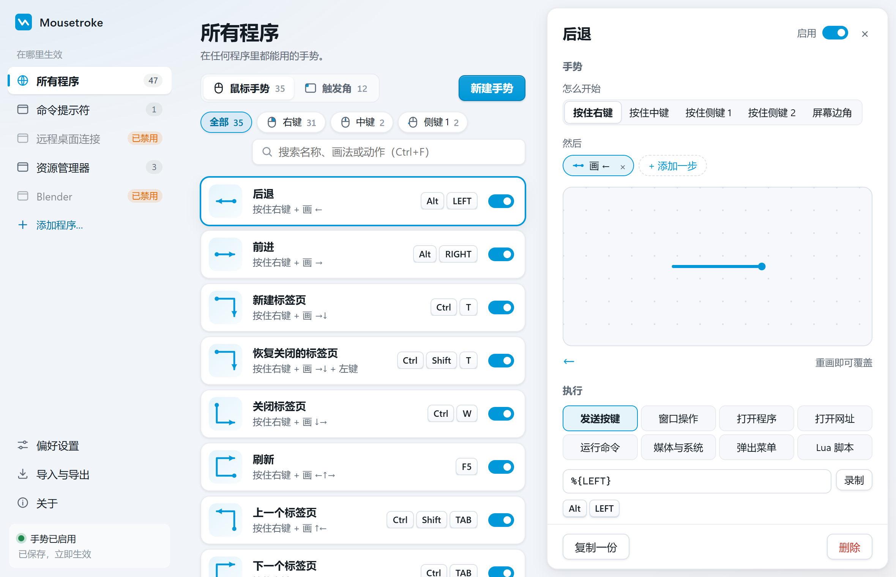

Gesturefy、CrxMouse 的全局替代方案
只在网页内后退和关标签页，扩展就可能够用；想控制桌面应用和屏幕边角，再考虑全局工具。
逐项比较
| 项目 | Mousetroke | Gesturefy | CrxMouse |
|---|---|---|---|
| 支持平台 | Windows 10 1809+/11 x64；macOS 11+（Apple silicon、Intel，测试版）[4] | Firefox 扩展[1] | 桌面 Chrome 扩展[3] |
| 许可证与价格 | 免费，MIT 开源[4] | GPL-3.0 开源[1] | — |
| 维护与最近发布 | v0.2.1 · 2026-10-20[6] | v3.2.19 · 2026-09-25[2] | — |
| 作用范围 | 全局；可按程序设置或禁用[5] | 浏览器网页；不能在 about:addons、Mozilla 受限页等处使用[1] | 浏览器导航、标签页与自定义手势[3] |
| 脚本与动作 | Lua；发送按键、窗口操作、打开程序、打开网址、运行命令、媒体与系统、弹出菜单、Lua 脚本，共 8 类动作[5] | 提供 user script、多用途和跨扩展命令[1] | — |
| 屏幕边角 | 支持屏幕角落和边缘动作[5] | — | — |
| 触控板与触屏 | 以鼠标按键拖动为主[4] | 官方说明面向鼠标，不适合触控板[1] | — |
| 安装方式 | Windows 13.2 MB 便携 exe；Mac 8.1 MB DMG[5] | Firefox 附加组件；无需独立桌面程序[1] | Chrome 浏览器扩展[3] |
依据各官网信息，核对于 2026-10-21；“—”表示官网未说明。
按你的需求选择
适合选择 Mousetroke 的情况
你希望同一套鼠标习惯用于浏览器、文件管理器与其他应用，并使用屏幕边角动作。
适合选择 Gesturefy / CrxMouse 的情况
你只操作网页和标签页，希望直接在 Firefox 或 Chrome 中添加扩展，不额外安装桌面手势程序。
实际使用中的差别
Gesturefy 直接装在 Firefox 中，提供鼠标手势、用户脚本和跨扩展命令。它不适合触控板，也不能在 about:addons 等受限页面使用。CrxMouse 则用于桌面 Chrome，提供浏览器导航、标签页控制和自定义手势；只处理网页操作时，这类扩展就很方便。
Mousetroke 能把鼠标手势用到文件管理器和其他桌面应用，也能设置屏幕边角。换用时，先重建后退、关标签页等常用动作，再按程序调整或禁用冲突规则。你需要运行独立桌面程序，首次打开会涉及签名提示，Mac 上还需授予辅助功能权限。

常见问题
Windows 11 上有什么好的 Gesturefy 替代工具？
如果你主要用鼠标，需要全局手势、屏幕边角和可查看的 MIT 源码，可以考虑 Mousetroke。若需求是深度宏编辑、原生多指触控或只在浏览器内操作，请结合本页的选择建议评估。
Mousetroke 免费且开源吗？
是，采用 MIT 许可证，没有广告或账号，无遥测。默认每天向 GitHub 检查一次更新，可在偏好设置中关闭。
只需要浏览器手势，也值得装全局工具吗？
不一定。只在网页内操作时，浏览器扩展可能更合适。需要文件管理器、其他桌面应用或屏幕边角时，再考虑 Mousetroke，并按程序禁用有冲突的手势。
从一个常用手势开始
后退、关标签页、管理窗口，或从屏幕边角执行动作。Windows 常驻约 19 MB，Mac 约 13 MB。
Windows exe 尚未代码签名，SmartScreen 首次运行可能警告：更多信息 → 仍要运行。Mac 测试版自签名且未公证；拖入“应用程序”，如被拦截到“隐私与安全性 → 仍要打开”，再按引导授予辅助功能权限。
来源
最后核查